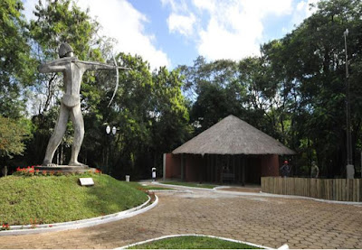

Sobre o bosque Xetá
A cidade paranaense de Umuarama, conhecida como a “capital da amizade”, embora seja uma cidade moderna, tem vários parques urbanos muito bem estruturados, que são atrativos locais um deles é o bosque xetá.
O Bosque Xetá de Umuarama é uma importante área de preservação ambiental localizada em Umuarama, no estado do Paraná, Brasil.
Contexto e História
Localização: O Bosque Xetá está situado em Umuarama, uma cidade do noroeste do Paraná. A área do bosque é um dos poucos fragmentos de mata atlântica remanescente na região, o que torna sua preservação crucial.
Importância Cultural: O nome "Xetá" é uma referência aos Xetá, um grupo indígena que habitava a região. Embora não existam muitos registros sobre a presença direta dos Xetá em Umuarama, a escolha do nome para o bosque homenageia a cultura e a história dos povos indígenas da região.
Características do Bosque Xetá
Área e Vegetação: O Bosque Xetá cobre uma área significativa e é composto por uma vegetação rica e diversificada. A floresta é um exemplo da mata atlântica, um dos biomas mais ameaçados do Brasil. O bosque abriga várias espécies de árvores nativas, arbustos, e uma rica fauna, incluindo aves, mamíferos e insetos.
Biodiversidade: A área é um importante refúgio para diversas espécies de plantas e animais que são nativas da região. A presença de várias espécies ameaçadas ou em risco de extinção faz com que o Bosque Xetá seja um local crucial para a conservação da biodiversidade.
Importância Ambiental
Conservação e Educação: O Bosque Xetá serve como um importante centro de conservação e educação ambiental. Projetos de preservação são realizados para proteger a fauna e flora locais e para restaurar áreas degradadas. Além disso, o bosque oferece oportunidades para a educação ambiental, com programas para escolas e visitantes que ajudam a promover a conscientização sobre a importância da preservação da natureza.
Pesquisa Científica: A área também é utilizada para pesquisa científica. Estudiosos e pesquisadores podem observar e estudar a biodiversidade da mata atlântica, contribuindo para o conhecimento sobre os ecossistemas e as melhores práticas para sua conservação.
Desafios e Manutenção
Pressões Urbanas e Agrícolas: Um dos principais desafios enfrentados pelo Bosque Xetá é a pressão do crescimento urbano e da expansão agrícola. A urbanização e a agricultura podem levar à degradação ambiental e à perda de habitat.
Manutenção e Proteção: Para garantir a preservação do bosque, são necessários esforços contínuos em termos de monitoramento, gestão e proteção. Isso inclui medidas contra o desmatamento ilegal, controle de espécies invasoras e promoção de práticas sustentáveis.
Legado e Futuro
Preservação Cultural e Natural: O Bosque Xetá não é apenas um importante local de preservação ambiental, mas também um símbolo do compromisso com a proteção da rica herança natural e cultural da região.
Projetos Futuramente: O futuro do Bosque Xetá depende de esforços contínuos para manter sua integridade ecológica e promover a conscientização sobre a importância da conservação. Iniciativas de envolvimento comunitário, educação e parcerias com organizações ambientais são essenciais para garantir que o bosque continue a desempenhar seu papel vital na proteção da biodiversidade e na promoção da sustentabilidade.
O Bosque Xetá é um exemplo valioso de como a preservação de áreas naturais pode contribuir para a conservação da biodiversidade e para a educação ambiental, além de honrar a herança cultural dos povos indígenas da região.